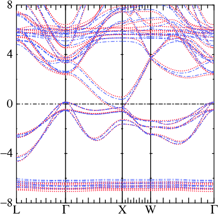

HAM NSPIN=2 BFIELD=2
...
BFIELD=1 allows the field to point in
any direction; BFIELD=2 restricts the
field to the z axis. The former case generates a noncollinear
hamiltonian; the latter is spin diagonal. (The hamiltonian may also
be noncollinear for another reason, e.g. spin-orbit coupling is turned
on.)
fp/test/test.fp gdnThis test combines the LDA+U hamiltonian with spin-orbit coupling. Bands are calculated for that case; then a magnetic field of 0.25 eV=0.037/2 Ry is added to the Gd site and the bands are recalculated. GdN has two atoms and file bfield.gdn reads:
0 0 .037/2 0 0 0 The test generates files bnds.bfield.gdn and bnds.nobfield.gdn To analyze the bands you need to use a graphics package. If you have the FPLOT packaged installed, you can draw the picture shown below comparing the two cases, by invoking the following commands after running the test:
echo -8,8,5,10 | plbnds -fplot -ef=0 -scl=13.6 -lbl=L,G,X,W,G -dat=blue bnds.nobfield.gdn
echo -8,8,5,10 | plbnds -fplot -ef=0 -scl=13.6 -lbl=L,G,X,W,G -dat=dat bnds.bfield.gdn
mv plot.plbnds plot.plbnds~
echo "% char0 colr=3,bold=4,clip=1,col=1,.2,.3" >>plot.plbnds
echo "% char0 colb=2,bold=2,clip=1,col=.2,.3,1" >>plot.plbnds
awk '{if ($1 == "-colsy") {sub("-qr","-lt {colr} -qr");print;sub("dat","blue");sub("colr","colb");print} else {print}}' plot.plbnds~ >>plot.plbnds
fplot -disp -f plot.plbnds
In the figure, blue bands are LDA+U results. Because spin-orbit coupling is included both minority and majority spin bands appear. You can see majority Gd f states near -6.5 eV, and minority f states near +5.5 eV. Gd d states are spin-split by the exchange-correlation field originating from spin splitting of the Gd f states; majority and minority d states are found near 2.5 eV and 3.5 eV, respectively, at the Γ point.
Red bands use the same potential as the LDA+U case, except that a Bz field of magnitude 0.5 eV was added to the Gd site. Bz causes the the following shifts:
Longitudinal susceptibility.
The magnetic susceptibility is the system's magnetic response to an external magnetic field:
δM = χ δB or
δB = χ-1 δM
δM itself can be obtained from a derivative of the total energy:
δM = (∂E/∂B) δB
Thus
χ = (∂2E/∂B2) and
χ-1 = (∂2E/∂M2)
In linear response theory, χ-1 can be written
as a sum of a noninteracting part and an interacting part
χ-1 = χ0-1 - IThe kernel I is often associated with the "Stoner parameter." It is typically about 1 eV in 3d transition metals.
δB = χ0-1 δM0
where δM0 is the magnetization induced by
δB without taking into account the internal potential shifts
that δM cause. In the density-functional context,
δM0 can be obtained from an initially
self-consistent potential V0, which is generated in
the absence of an external field. δM0 is then
the change in M for the potential
V0+δB. In practice this is obtained by
evaluating the change in M from the change in output density of a
1-shot calculation with potential V0+δB.
lmf -vnk=16 --pr31 -vrel=1 -vnit=50 -vso=0 --rs=1 -vbeta=.3 -vbf=2 -vbz=$bz -vconv=1d-6 -vconvc=1d-6 felzbz must be set as a shell variable.
 Magnetization and total energy (relative to the B=0 case) were generated for several values of B, and
∂E/∂B was obtained from numerical differentiation of E.
Magnetization and total energy (relative to the B=0 case) were generated for several values of B, and
∂E/∂B was obtained from numerical differentiation of E.
As the top figure shows, the total energy E has a minimum near, but
not exactly at B=0. This shows that there are some slight errors in
the LDA calculation (in an exact self-consistent LDA calculation
E should be minimum at exactly B=0).
E is smooth in the interval (−0.01,0.01) Ry, as
the figure shows. The behavior is somewhat unsmooth near
B=−0.01 Ry, and is a discontinuity or near discontinuity is
evident near B=0.01 Ry.
That means numerical differentiation ∂E/∂B is a bit problematic,
particularly outside the (−0.01,0.01) interval. Nevertheless we can
perform it. In the bottom figure, M−M(B=0) and
∂E/∂B are plotted respectively as a function of B as dashed
lines+circles, and a solid line. The two curves track
fairly well, though ∂E/∂B is noisy; nor is M(B)
particularly smooth.
We can obtain χ from the slope ∂E/∂B. There is some
uncertainty in the calculation since M is not particularly
smooth (note in particular that (∂E/∂B)+ and
(∂E/∂B)− are a little different).
We can also obtain both χ0 by obtaining
δM0 from a 1-shot calculation. The table
below shows M0 and M for two values of B:
B M0 M
-0.005 -2.363587 -2.402973
0.005 -2.234213 -2.219662
Thus we get:
χ0−1 = 0.01/(−2.234213−−2.363587) = 0.0773 Ry ⇒ χ0 = 12.9 Ry−1 = 0.95 eV. χ−1 = 0.01/(−2.219662−−2.402973) = 0.0546 Ry ⇒ χ = 18.3 Ry−1 = 1.35 eV. I = χ0−1 − χ−1 = 0.0227 Ry = 0.30 eVAs noted above, I calculated in this way only approximately corresponds to the Stoner I. A better calculation should produce I about 1 eV.